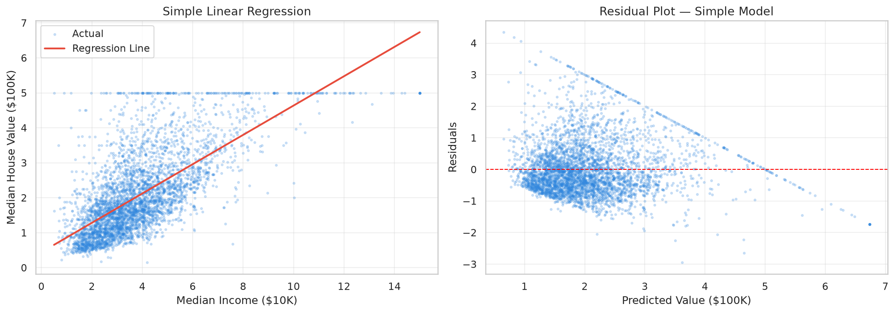
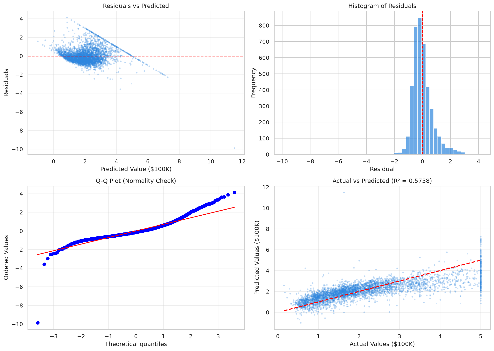

📊 Dataset: California Housing (8 features, 20,640 rows)
▶ Run in Google Colab"kw">from sklearn.linear_model "kw">import LinearRegression
"kw">from sklearn.metrics "kw">import r2_score, mean_squared_error
"kw">class="cmt"># Simple: MedInc → MedHouseVal
model = LinearRegression()
model.fit(X_train[['MedInc']], y_train)
y_pred = model.predict(X_test[['MedInc']])
"kw">print(f'Equation: {model.coef_[0]:.4f} × MedInc + {model.intercept_:.4f}')
"kw">print(f'R²: {r2_score(y_test, y_pred):.4f}')
Simple regression line (left) and residual plot (right)
"kw">class="cmt"># All 8 features
model_multi = LinearRegression()
model_multi.fit(X_train, y_train)
y_pred = model_multi.predict(X_test)
"kw">print(f'R²(multiple): {r2_score(y_test, y_pred):.4f}')
"kw">print(f'RMSE: {np.sqrt(mean_squared_error(y_test, y_pred)):.4f}')"kw">class="cmt"># Four diagnostic plots
fig, axes = plt.subplots(2, 2, figsize=(14, 10))
"kw">class="cmt"># 1. Residuals vs Predicted
axes[0,0].scatter(y_pred, residuals, alpha=0.2)
"kw">class="cmt"># 2. Histogram of residuals
axes[0,1].hist(residuals, bins=50)
"kw">class="cmt"># 3. Q-Q plot(normality check)
stats.probplot(residuals, dist='norm', plot=axes[1,0])
"kw">class="cmt"># 4. Actual vs Predicted
axes[1,1].scatter(y_test, y_pred, alpha=0.2)
Complete residual diagnostics on real housing data
Ridge & Lasso regularization comparison1️⃣ R²=0.58 意味着什么？模型能解释多少房价变化？
2️⃣ 残差图中如果看到漏斗形状 (funnel shape)，说明什么问题？
3️⃣ Lasso 在 alpha=100 时 R² 变成负的——这可能吗？怎么解释？
4️⃣ 为什么多元回归比一元回归好那么多？MedInc 不是最强特征吗？